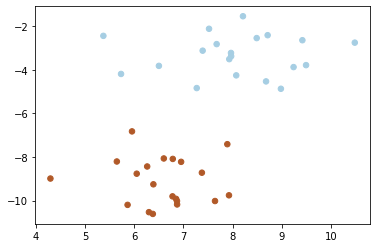
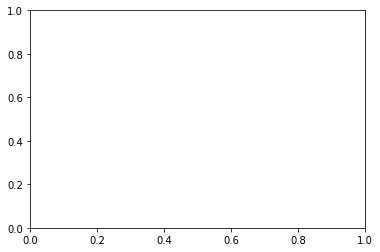
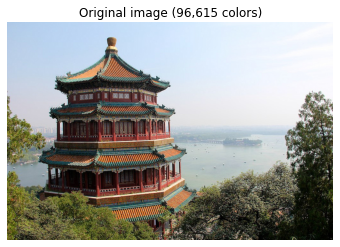
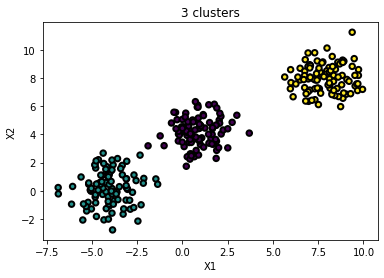

SVM, k-means
4 weeks by kdh
Table of Contents
1 알고리즘보다는 파이썬에 익숙해지는데 시간을 들이고, 전체적인 flow를 익히자.
2 SVM(Support Vector Machine)
광장히 많이 쓰여지고 있는 알고리즘이다. 지도학습이다. 결정된 점들의 최대 마진을 가지는 선을 찾는 알고리즘을 적용한 것이다.
2.1 SVM 실습
import numpy as np import matplotlib.pyplot as plt from sklearn import svm from sklearn.datasets import make_blobs
랜덤스테이트 값이 정해지면 포인트도 매번 동일한가. 값이 값네.. makeblobs: 학습용 데이터셋을 만들어주는 함수라고 하네.
# we create 40 separable points X, y = make_blobs(n_samples=40, centers=2, random_state=6) X
array([[ 6.37734541, -10.61510727], [ 6.50072722, -3.82403586], [ 4.29225906, -8.99220442], [ 7.39169472, -3.1266933 ], [ 7.64306311, -10.02356892], [ 8.68185687, -4.53683537], [ 5.37042238, -2.44715237], [ 9.24223825, -3.88003098], [ 5.73005848, -4.19481136], [ 7.9683312 , -3.23125265], [ 7.37578372, -8.7241701 ], [ 6.95292352, -8.22624269], [ 8.21201164, -1.54781358], [ 6.85086785, -9.92422452], [ 5.64443032, -8.21045789], [ 10.48848359, -2.75858164], [ 7.27059007, -4.84225716], [ 6.29784608, -10.53468031], [ 9.42169269, -2.6476988 ], [ 8.98426675, -4.87449712], [ 6.6008728 , -8.07144707], [ 5.95313618, -6.82945967], [ 6.87151089, -10.18071547], [ 6.26221548, -8.43925752], [ 7.97164446, -3.38236058], [ 7.67619643, -2.82620437], [ 7.92736799, -9.7615272 ], [ 5.86311158, -10.19958738], [ 8.07502382, -4.25949569], [ 6.78335342, -8.09238614], [ 7.89359985, -7.41655113], [ 6.04907774, -8.76969991], [ 6.77811308, -9.80940478], [ 8.71445065, -2.41730491], [ 8.49142837, -2.54974889], [ 9.49649411, -3.7902975 ], [ 7.52132141, -2.12266605], [ 6.3883927 , -9.25691447], [ 7.93333064, -3.51553205], [ 6.86866543, -10.02289012]])
# fit the model, don't regularize for illustration purposes clf = svm.SVC(kernel='linear', C=1000) clf.fit(X, y)
SVC(C=1000, kernel='linear')
plt.scatter(X[:, 0], X[:, 1], c=y, s=30, cmap=plt.cm.Paired)
<matplotlib.collections.PathCollection at 0x7ff9bf214780>

좌표 x,y 수정작업
# plot the decision function ax = plt.gca()

xlim = ax.get_xlim() ylim = ax.get_ylim() xlim
(0.0, 1.0)
분리해서 실행하니 contour 에러가 떠서 결과물을 보려면 소스코드를 분리하지 말고 실행하자. 왜일까?
# create grid to evaluate model xx = np.linspace(xlim[0], xlim[1], 30) yy = np.linspace(ylim[0], ylim[1], 30) YY, XX = np.meshgrid(yy, xx) xy = np.vstack([XX.ravel(), YY.ravel()]).T Z = clf.decision_function(xy).reshape(XX.shape) # plot decision boundary and margins ax.contour(XX, YY, Z, colors='k', levels=[-1, 0, 1], alpha=0.5, linestyles=['--', '-', '--']) # plot support vectors ax.scatter(clf.support_vectors_[:, 0], clf.support_vectors_[:, 1], s=100, linewidth=1, facecolor='none', edgecolors='k') plt.show()
3 k-means(k-평균 알고리즘)
주어진 데이터를 k개의 클러스터로 묶는 알고리즘이고 비지도 학습이다. 클러스티링용 알고리즘. 클래시파잉(A다 B다)은 아니다. 데이터를 군집화 하는 용도로 쓰이는 알고리즘이다.
3.1 실습
import numpy as np
import matplotlib.pyplot as plt
from sklearn.cluster import KMeans
from sklearn.metrics import pairwise_distances_argmin
from sklearn.datasets import load_sample_image
from sklearn.utils import shuffle
from time import time
n_colors = 64
# Load the Summer Palace photo
china = load_sample_image("china.jpg")
china
array([[[174, 201, 231], [174, 201, 231], [174, 201, 231], ..., [250, 251, 255], [250, 251, 255], [250, 251, 255]], [[172, 199, 229], [173, 200, 230], [173, 200, 230], ..., [251, 252, 255], [251, 252, 255], [251, 252, 255]], [[174, 201, 231], [174, 201, 231], [174, 201, 231], ..., [252, 253, 255], [252, 253, 255], [252, 253, 255]], ..., [[ 88, 80, 7], [147, 138, 69], [122, 116, 38], ..., [ 39, 42, 33], [ 8, 14, 2], [ 6, 12, 0]], [[122, 112, 41], [129, 120, 53], [118, 112, 36], ..., [ 9, 12, 3], [ 9, 15, 3], [ 16, 24, 9]], [[116, 103, 35], [104, 93, 31], [108, 102, 28], ..., [ 43, 49, 39], [ 13, 21, 6], [ 15, 24, 7]]], dtype=uint8)
# Convert to floats instead of the default 8 bits integer coding. Dividing by # 255 is important so that plt.imshow behaves works well on float data (need to # be in the range [0-1]) china = np.array(china, dtype=np.float64) / 255 china
array([[[0.68235294, 0.78823529, 0.90588235], [0.68235294, 0.78823529, 0.90588235], [0.68235294, 0.78823529, 0.90588235], ..., [0.98039216, 0.98431373, 1. ], [0.98039216, 0.98431373, 1. ], [0.98039216, 0.98431373, 1. ]], [[0.6745098 , 0.78039216, 0.89803922], [0.67843137, 0.78431373, 0.90196078], [0.67843137, 0.78431373, 0.90196078], ..., [0.98431373, 0.98823529, 1. ], [0.98431373, 0.98823529, 1. ], [0.98431373, 0.98823529, 1. ]], [[0.68235294, 0.78823529, 0.90588235], [0.68235294, 0.78823529, 0.90588235], [0.68235294, 0.78823529, 0.90588235], ..., [0.98823529, 0.99215686, 1. ], [0.98823529, 0.99215686, 1. ], [0.98823529, 0.99215686, 1. ]], ..., [[0.34509804, 0.31372549, 0.02745098], [0.57647059, 0.54117647, 0.27058824], [0.47843137, 0.45490196, 0.14901961], ..., [0.15294118, 0.16470588, 0.12941176], [0.03137255, 0.05490196, 0.00784314], [0.02352941, 0.04705882, 0. ]], [[0.47843137, 0.43921569, 0.16078431], [0.50588235, 0.47058824, 0.20784314], [0.4627451 , 0.43921569, 0.14117647], ..., [0.03529412, 0.04705882, 0.01176471], [0.03529412, 0.05882353, 0.01176471], [0.0627451 , 0.09411765, 0.03529412]], [[0.45490196, 0.40392157, 0.1372549 ], [0.40784314, 0.36470588, 0.12156863], [0.42352941, 0.4 , 0.10980392], ..., [0.16862745, 0.19215686, 0.15294118], [0.05098039, 0.08235294, 0.02352941], [0.05882353, 0.09411765, 0.02745098]]])
# Load Image and transform to a 2D numpy array. w, h, d = original_shape = tuple(china.shape) w
427
assert d == 3 image_array = np.reshape(china, (w * h, d)) image_array
array([[0.68235294, 0.78823529, 0.90588235], [0.68235294, 0.78823529, 0.90588235], [0.68235294, 0.78823529, 0.90588235], ..., [0.16862745, 0.19215686, 0.15294118], [0.05098039, 0.08235294, 0.02352941], [0.05882353, 0.09411765, 0.02745098]])
print("Fitting model on a small sub-sample of the data")
t0 = time()
image_array_sample = shuffle(image_array, random_state=0)[:1000]
image_array_sample
array([[0.92156863, 0.9254902 , 0.94509804], [0.37647059, 0.37647059, 0.14117647], [0.48235294, 0.42745098, 0.41568627], ..., [0.96862745, 0.96862745, 0.97647059], [0.9372549 , 0.96470588, 1. ], [0.11372549, 0.12156863, 0.07843137]])
kmeans = KMeans(n_clusters=n_colors, random_state=0).fit(image_array_sample) kmeans
KMeans(n_clusters=64, random_state=0)
print("done in %0.3fs." % (time() - t0))
codebook_random = shuffle(image_array, random_state=0)[:n_colors]
codebook_random
array([[0.92156863, 0.9254902 , 0.94509804], [0.37647059, 0.37647059, 0.14117647], [0.48235294, 0.42745098, 0.41568627], [0.81960784, 0.81568627, 0.84705882], [0.98823529, 0.98823529, 0.98823529], [0.41568627, 0.16470588, 0.16862745], [0.94901961, 0.94901961, 0.95686275], [0.87843137, 0.92941176, 0.99215686], [0.24313725, 0.32156863, 0.17647059], [0.80784314, 0.88627451, 0.98039216], [0.07843137, 0.12941176, 0.01960784], [0.84705882, 0.91372549, 0.97647059], [0.75686275, 0.82745098, 0.91372549], [0.04313725, 0.04313725, 0.04313725], [0.38823529, 0.36470588, 0.23137255], [0.1254902 , 0.05490196, 0.05490196], [0.85490196, 0.92156863, 1. ], [0.61568627, 0.58823529, 0.42352941], [0.80784314, 0.89411765, 0.98823529], [0.70196078, 0.75686275, 0.75686275], [0.86666667, 0.92941176, 0.98823529], [0.76078431, 0.81568627, 0.85882353], [0.03921569, 0.03921569, 0.03921569], [0.8 , 0.87843137, 0.97647059], [0.17647059, 0.25490196, 0.29019608], [0.94117647, 0.95294118, 0.98039216], [0.0745098 , 0.05882353, 0.05490196], [0.54117647, 0.52156863, 0.27058824], [0.74117647, 0.78431373, 0.76862745], [0.32156863, 0.14117647, 0.14901961], [0.89411765, 0.94901961, 1. ], [0.02352941, 0. , 0.00784314], [0.02352941, 0.03529412, 0.00784314], [0.41568627, 0.43529412, 0.17254902], [0.06666667, 0.03921569, 0.01568627], [0.89411765, 0.90980392, 0.92156863], [0.04313725, 0.04705882, 0.02352941], [0.81568627, 0.89803922, 0.98039216], [0.90588235, 0.90588235, 0.91372549], [0.16862745, 0.08235294, 0.09019608], [0.9372549 , 0.96470588, 0.98823529], [0.38431373, 0.25882353, 0.16862745], [0.9254902 , 0.94117647, 0.97647059], [0.23921569, 0.3254902 , 0.31764706], [0.59215686, 0.42352941, 0.34901961], [0.77254902, 0.80784314, 0.8745098 ], [0.89803922, 0.95294118, 1. ], [0.71764706, 0.78823529, 0.83529412], [0.82745098, 0.90588235, 1. ], [0.96470588, 0.96078431, 0.98431373], [0.87058824, 0.89803922, 0.9372549 ], [0.09411765, 0.09803922, 0.06666667], [0.21568627, 0.16078431, 0.10980392], [0.25490196, 0.16470588, 0.13333333], [0.56862745, 0.68627451, 0.69411765], [0.72941176, 0.82352941, 0.9254902 ], [0.81568627, 0.80784314, 0.85098039], [0.77647059, 0.82352941, 0.81568627], [0.32156863, 0.50588235, 0.48235294], [0.2627451 , 0.25490196, 0.10196078], [0.04313725, 0.0745098 , 0.02352941], [0.90588235, 0.94509804, 0.98431373], [0.40784314, 0.48235294, 0.12941176], [0.81568627, 0.86666667, 0.8 ]])
print("Predicting color indices on the full image (random)")
t0 = time()
labels_random = pairwise_distances_argmin(codebook_random, image_array, axis=0)
labels_random
array([55, 55, 55, ..., 52, 60, 60])
print("done in %0.3fs." % (time() - t0))
def recreate_image(codebook, labels, w, h):
"""Recreate the (compressed) image from the code book & labels"""
d = codebook.shape[1]
image = np.zeros((w, h, d))
label_idx = 0
for i in range(w):
for j in range(h):
image[i][j] = codebook[labels[label_idx]]
label_idx += 1
return image
# Display all results, alongside original image
plt.figure(1)
plt.clf()
plt.axis('off')
plt.title('Original image (96,615 colors)')
plt.imshow(china)
plt.figure(2)
plt.clf()
plt.axis('off')
plt.title('Quantized image (64 colors, K-Means)')
plt.imshow(recreate_image(kmeans.cluster_centers_, labels_random, w, h))
plt.figure(3)
plt.clf()
plt.axis('off')
plt.title('Quantized image (64 colors, Random)')
plt.imshow(recreate_image(codebook_random, labels_random, w, h))
plt.show()

3.2 makeblobs
모든 방향으로 같은 성질을 가지는 정규분포를 이용해 가상 데이터 생성해주는 함수이다. 클러스트링 용 가상데이터를 생성하는데 사용. nsamples: 표본 데이터 수 nfeatures: 독립 변수 수 centers: 클러스터 수 clusterstd: 클러스터 표준 편차 …
from matplotlib import pyplot as plt
from sklearn.datasets import make_blobs
plt.title('3 clusters')
X, y = make_blobs(n_samples=300, n_features=2, centers=3, random_state=3)
plt.scatter(X[:, 0], X[:, 1], marker='o', c=y, s=30, edgecolor="k", linewidth=2)
plt.xlabel("X1")
plt.ylabel("X2")
plt.show()

4 Apriori(연관규칙)
비지도 학습. 연관규칙중 가장 먼저 개발. 높은 빈도를 가지는 조합을 찾아내는 목적.
장바구니 분석이라고도 함.
세가지를 주의깊게 보자.
- 지지도(Support): 아이템 A,B 모두 구매하는 비율 조건이 일어날 확률(달걀을 살 확률, 라면을 살 확률, ..)
- 신뢰도(Confidence): 아이템(A)을 구매한 경우, 아이템(B)를 얼마나 구매할 것인지(라면을 샀을 때 달결을 살 확률..)
- 향상도(Lift): B만 구매할 때보다, A를 구매한 사람이 B를 구매할 확률이 얼마나 더 높은지(동시에 얼마나 발생하는지를 비율로) <– TODO: 다시 정리해보자
ratsgo.github.io에 자세히 설명해둔게 있다.
sparce matrix가 주로 된다(희소행렬). 희소행렬이 ai에선 많이 사용된다. 그래서 희소행렬관련 함수가 잘 만들어져있다.
4.1 Apriori 알고리즘
빈발하지 않는 집합을 제거해간다. 최소지지도를 만족하지 못하는 탐색해볼 필요가 없다.